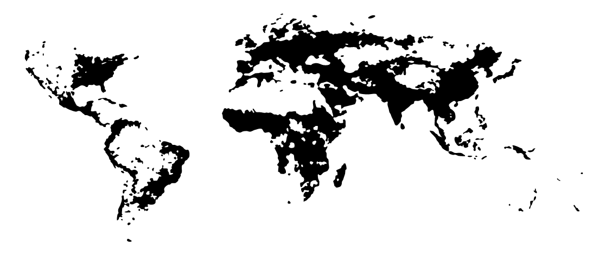

Cidade / Arquivo
Banksy, São Paulo e a Bela Vista
Como muda o desenho de São Paulo quando só aparecem as áreas acima de uma densidade mínima?
O recorte distrital permite comparar os censos de 2010 e 2022. A escala dos setores censitários do gráfico de 2014 aparece na figura original abaixo.
Publicação original


Recentemente vi essa visualização dos dados de densidade populacional do mundo, com uma perspectiva estética à la Banksy. No mapa é possível interagir com a visualização a partir do slider na parte superior da página, selecionando quais níveis de densidade populacional que serão destacadas.
Resolvi reproduzir a abordagem e solução estética para visualizar os dados de densidade populacional do Censo 2010 da cidade de São Paulo (basta clicar na imagem para acessar o mapa interativo – ou aqui). Infelizmente, não cheguei no ponto de automatizar totalmente o processo (mais por preguiça que por dificuldade), mas cheguei bem próximo disso; a ideia é tornar automática a criação dessa visualização para qualquer município do Brasil.

A lógica por trás dessa maneira de disponibilizar a informação é similar a de um projetor de cinema. O mapa consiste em uma única e comprida imagem com todas as visualizações possíveis para todos os níveis de densidade demográfica passíveis de seleção. Ao escolher um valor no slider acima do mapa, a programação por trás do mapa “corta” a figura no ponto exato correspondente ao nível selecionado (para ver a imagem inteira, basta clicar aqui); esse solução técnica permite que a visualização seja bastante rápida e eficiente.
O mapa por sua vez, consegue criar a identidade visual do município de São Paulo sem tem que utilizar qualquer divisão territorial; a dificuldade que um paulistano possa vir a enfrentar ao tentar identificar as zonas mais densas pode ser atribuída ao pouco conhecimento que temos do nosso entorno (fiquei, inutilmente, comparando mapas de bairros e distritos tentando ver se adivinhava quais eram as áreas mais densas ou chegar a uma conclusáo – como, por exemplo, que a Bela Vista é um dos distritos mais densos da cidade). Dá para tentar comparar olhando outros mapas da cidade, como esse.

A visualização foi feita utilizando os dados do Censo 2010 do IBGE e o R. Como de costume, deixo um formulário abaixo para aqueles que quiserem mais informações sobre a análise acima.